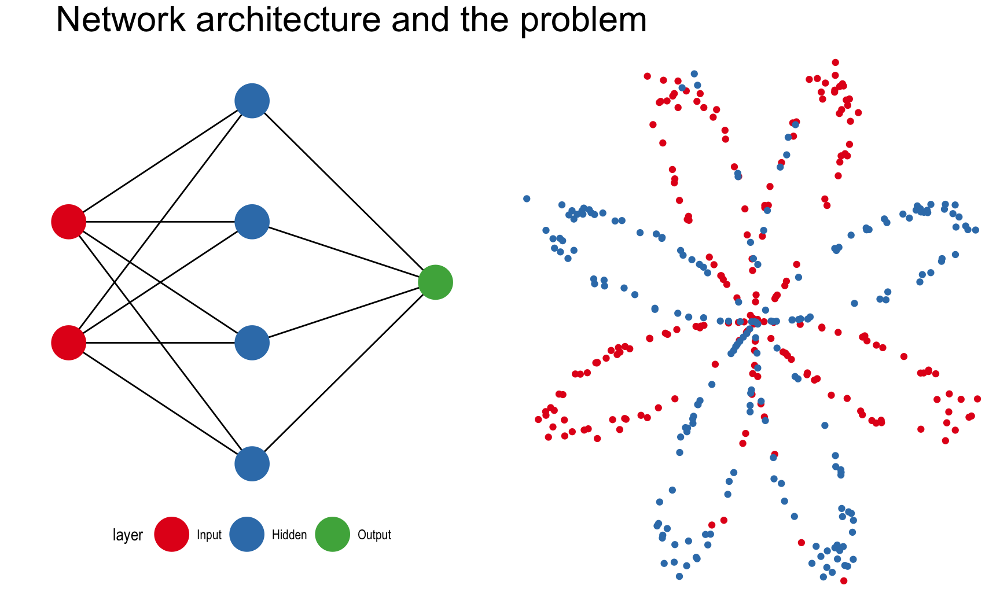
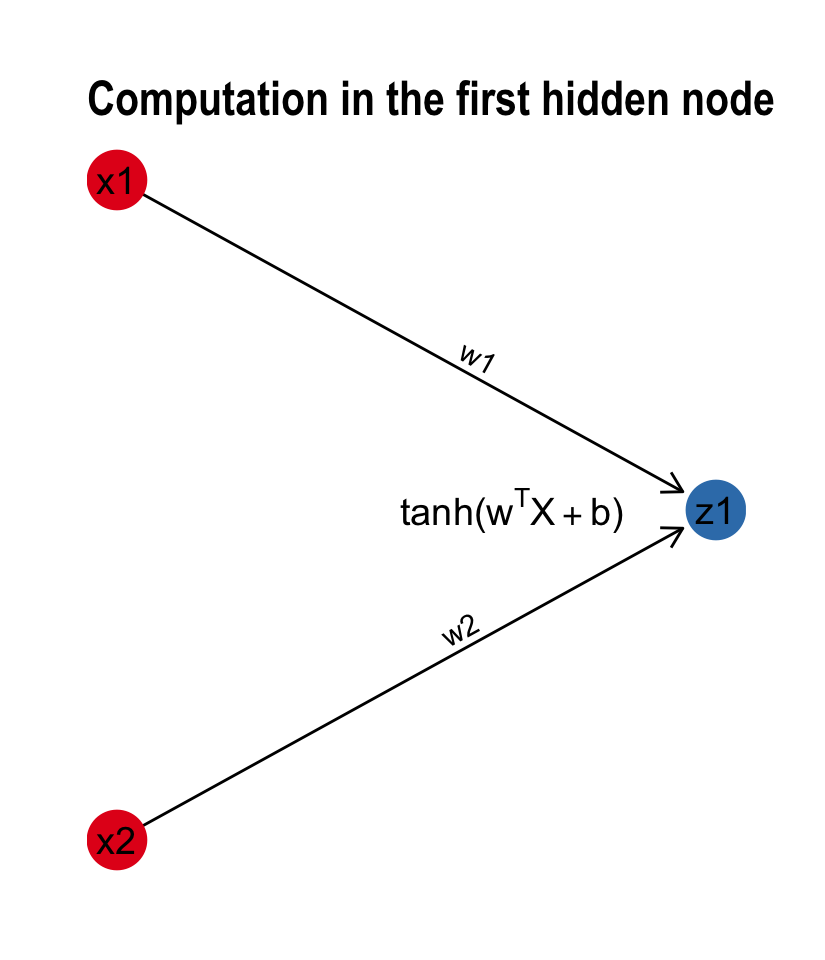
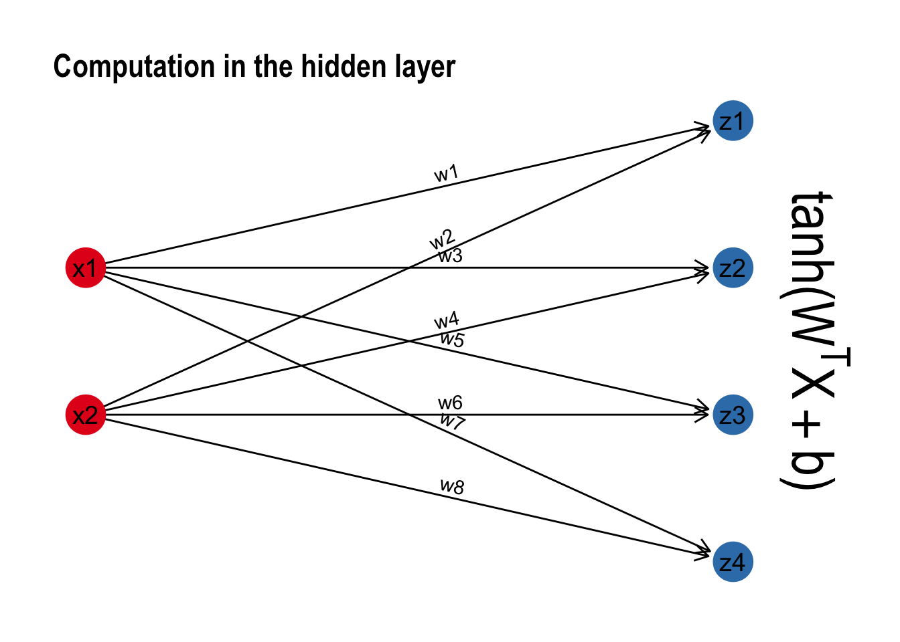

Tamas Szilagyi


One would be forgiven to think that artificial neural networks are the newest and shiniest of modern data science. On the contrary, the main concepts have been around for decades. But it is recent progress in computational resources and the availability of massive datasets that these learning architectures revealed their true powers. AlphaGo, Siri and Alexa, self-driving cars are all running on some form or other of deep artificial neural networks.
The hype means the Internet is aflush with tutorials and online resources to get started. Yet, somehow R hasn’t gotten much street cred in the area. Most of the frameworks are implemented in Python, and so are the tutorials. R is supposed to be the de facto lingua franca of statistical computing, so what’s up with that?
What follows is a custom build of a simple one hidden-layer neural network, where we’ll save just enough parameters at every iteration to be able to gganimate the training process afterwards.

This post is mostly inspired by Andrew Ng’s Deep Learning course (including the dataset), which I strongly recommend for anyone interested in neural networks. The task is to predict the color of the points in the plot on the right. While it seems like a trivial problem, linear algorithms will inevitably fail at it because the colors are not linearly separable. There’s no single line we can draw that perfectly separates the red dots from the blue dots.
The input layer contains the input data. The number of nodes in the input layer is always equal to the number of features in the data (X, Y coordinates). The input is then 1. propagated forward through the hidden layer. Number of hidden nodes and number of hidden layers can be modified at will. The edges between the nodes represent the weights, and the prediction is essentially a function of these weights.
Once the data has been passed through the entire network, we get the predictions in the output node and 2. compute the cost with respect to the actual labels. At each iteration, we adjust the weights to minimize this cost as much possible.
How do we do that? That’s the job of 3. backward propagation. By means of gradient descent, we calculate the partial derivatives of all computations with respect to what came after, alas we go backwards. First the derivatives of the weights of the hidden layer with respect to the output layer, and secondly those of the input layer with respect to the hidden layer. The gradients we obtain are then used to update the weights and start the process all over again. With each pass - also called epochs, we get closer to the optimal weights.
I will now explain in short and code up each of the three computations. The scripts we define will be used inside a single function call that trains the neural network. Significant overhead will be introduced by saving parameters at every iteration, but hopefully the animated plots will be worth it.
Forward propagation is the first pass through the data, calculating an output based on the weights of each edge. The connections from the input layer to each of the hidden nodes is a linear function, followed by an activation function.
The computational steps of forward propagations are \(Input -> Hidden -> Output\) .
If we break down each of the two connections into a linear function \(Z^{[i]}\) and an activation function \(A^{[i]}\), the architecture becomes \(X ->Z^{[1]}->A^{[1]}->Z^{[2]}->A^{[2]}\) with \(X\) as the input data.
The activation function is usually a non-linear function that enables the network to cope with non-linear problems. Examples include the sigmoid function, relu or tanh.
Let’s take for example the connections going from the input layer to one hidden node. If \(X_{m,n}\) is the vertically stacked dataset where m = number of features (2) , n = number of observations, \(w\) is a weight vector of length m; the linear function in one hidden node can be formally represented as a matrix vector product:
\[\begin{align*} w = \begin{pmatrix} w_{1} \\ w_{2} \\ \end{pmatrix}; X = \begin{pmatrix} x_{1,1} & x_{1,2} & \cdots & x_{1,n} \\ x_{2,1} & x_{2,2} & \cdots & x_{2,n} \\ \end{pmatrix} \end{align*}\] \[\begin{align*} Z = {w^T}X + b= \begin{pmatrix} w_{1} & w_{2} \\ \end{pmatrix} \begin{pmatrix} x_{1,1} & x_{1,2} & \cdots & x_{1,n} \\ x_{2,1} & x_{2,2} & \cdots & x_{2,n} \\ \end{pmatrix} + b \end{align*}\] \[\begin{align*} Z = \begin{pmatrix} w_{1}x_{1,1} + w_{2}x_{2,1}+b & w_{1}x_{1,2}+ + w_{2}x_{2,2}+b & \cdots & w_{1}x_{1,n} + w_{2}x_{2,n}+b \end{pmatrix} \end{align*}\]The activation function \(A^{[1]}\) is the tanh \(A^{[1]} = \tanh(Z^{[1]})\), for the output layer we’ll use the sigmoid instead \(A^{[2]} = \sigma(Z^{[2]})\). The computation can also be visualised as a subgraph of our neural network:

It turns out that this implementation scales to multiple hidden nodes without any formal change to the math. Instead of a weight vector \(w\), we are computing the same functions using a weight matrix \(W\). The matrix-vector product now becomes a dot product between the two matrices. With each node in the hidden layer, we add an extra row in the transposed weight matrix. The dimensionality requirements of matrix multiplication are kept intact: The number of columns of first matrix still equal the number of rows of the second. But the dimensions of the output change accordingly. We go from a transposed vector of length n to an m x n matrix where m = the number of hidden nodes.
\[\begin{align*} Z = {W^T}X + b= \begin{pmatrix} w_{1,1} & w_{1,2} \\ \vdots & \vdots \\ w_{n,1} & w_{n,2} \end{pmatrix} \begin{pmatrix} x_{1,1} & \cdots & x_{1,n} \\ x_{2,1} & \cdots & x_{2,n} \\ \end{pmatrix} + b \end{align*}\] \[\begin{align*} Z = \begin{pmatrix} w_{1,1}x_{1,1} + w_{1,2}x_{2,1}+b & \cdots & w_{1,1}x_{1,n} + w_{1,2}x_{2,n}+b \\ \vdots & \ddots & \vdots\\ w_{n,1}x_{1,1} + w_{n,2}x_{2,1}+b & \cdots & w_{n,1}x_{1,n} + w_{n,2}x_{2,n}+b \end{pmatrix} \end{align*}\]
The last step of going from the hidden layer to the output layer follows the same algebra. I’ll spare you the nitty gritty. Before we propagate forward for the first time, it is important to randomly initialize the weights. Otherwise each connection will compute the exact same thing.
initialize_parameters <- function(n_x, n_h, n_y) {
set.seed(2)
# W1 -- weight matrix of shape (n_h, n_x)
W1 = matrix(rnorm(n_x*n_h), nrow = n_h, ncol = n_x) * 0.01
# b1 -- bias vector of shape (n_h, 1)
b1 = rep(0, n_h)
# W2 -- weight matrix of shape (n_y, n_h)
W2 = matrix(rnorm(n_h*n_y), nrow = n_y, ncol = n_h) * 0.01
# b2 -- bias vector of shape (n_y, 1)
b2 = rep(0, n_y)
parameters = list(W1 = W1,b1 = b1,W2 = W2,b2 = b2)
return(parameters)
}Remember the schema is \(X ->Z^{[1]}->A^{[1]}->Z^{[2]}->A^{[2]}\). Both \(Z^{[1]}\) and \(Z^{[2]}\) are the same linear function, while \(A^{[1]} = \tanh(Z^{[1]})\) and \(A^{[2]} = \sigma(Z^{[2]})\). The sigmoid function didn’t make it to base R, so we define it first.
sigmoid <- function(x) {
1 / (1 + exp(-x))
}
forward_propagation <- function(X, parameters) {
# Retrieve each parameter from the list "parameters"
W1 <- parameters$W1; b1 <- parameters$b1
W2 <- parameters$W2; b2 <- parameters$b2
# Forward propagation
Z1 = W1 %*% X + b1
A1 = tanh(Z1)
Z2 = W2 %*% A1 + b2
A2 = sigmoid(Z2)
cache <- list(Z1=Z1,A1=A1,Z2=Z2,A2=A2)
return(cache)
}Each pass of forward propagation ends with a prediction. Generating a prediction for every pixel of our plot raster, we can simulate decision boundaries. As the algorithm learns, the borders slowly align with the data:

As we have seen above, forward propagation is nothing more than a predict function. When the dataset has been passed through the network, we get an output that can be compared to the actual label. The purpose of the cost function is to inform the model how far the output is from the target value. One of the most popular cost functions is log loss, formally known as:
\[J = - \frac{1}{m} \sum\limits_{i = 0}^{m} \large\left(\small Y\log\left(A^{[2]}\right) + (1-Y)\log\left(1- A^{[2]}\right) \large \right) \small \]
compute_cost <- function(A2, Y) {
# Number of observations
m <- dim(Y)[2]
cost <- -1/m * sum(Y * log(A2) + (1-Y)*log(1-A2))
return(cost)
}You saw how the algorithm was getting better at predicting the colors with each iteration. This is the result of reducing the cost as the model learns. 
Out of all building blocks of neural networks, back propagation is perhaps the most difficult to grasp. In a nutshell, it is calculating the error contribution of each weight to cost. The idea is to backward engineer the derivative or slope of every computation and update the weights so that the cost will decrease at each iteration.
We first calculate the gradient of \(Z^{[2]}\) with respect to \(A^{[2]}\), this is equal to \(dZ^{[2]} = A^{[2]} - Y\). Based on \(dZ^{[2]}\) we then calculate the gradients of the weights (and bias terms) going from the hidden layer to the output layer. We continue going backwards until we obtain the gradients for all the weights and bias terms.
\[A^{[2]} ->dZ^{[2]}->A^{[1]} -> dZ^{[1]} \\ \quad \quad \downarrow \quad \quad \quad \quad \quad \quad \downarrow \\ \quad \quad \quad dW^{[2]},db^{[2]} \quad \quad dW^{[1]},db^{[1]}\]
Below is the list of formulae we will need for the computations. Drilling further into the math is beyond the scope of this post, but there are great blog posts around dedicated to the topic.
\[\begin{align*} dZ^{[2]} = A^{[2]} - Y & \\ dW^{[2]} = \frac{1}mdZ^{[2]}A^{[1]T} & \\ db^{[2]} = \frac{1}m\sum_{n=1}^{m} dZ^{[2]} & \\ dZ^{[1]} = W^{[2]T}dZ^{[2]} * (1-A^{[1]2}) & \\ dW^{[1]} = \frac{1}mdZ^{[1]}X^{T} & \\ db^{[1]} = \frac{1}m\sum_{n=1}^{m} dZ^{[1]} \end{align*}\]The math certainly looks scarier than R code:
backward_propagation <-function(parameters, cache, X, Y) {
m = dim(X)[2]
# Retrieve W2
W2 <- parameters$W2
# Retrieve A1 and A2
A1 <- cache["A1"][[1]]; A2 <- cache["A2"][[1]]
# Backward propagation
dZ2 <- A2 - Y
dW2 <- 1/m * dZ2 %*% t(A1)
db2 <- 1/m * sum(dZ2)
dZ1 <- t(W2) %*% dZ2 * (1 - A1^2)
dW1 <- 1/m * dZ1 %*% t(X)
db1 <- 1/m * sum(dZ1)
grads <- list(dW1 = dW1,db1 = db1, dW2 = dW2,db2 = db2)
return(grads)
}Having obtained the gradients, we can choose a learning rate - the size of the step - at which we wish to update the weights at each iteration. This will be the heart of the gradient descent optimization we will shorty define.
update_parameters <- function(parameters, grads, learning_rate = 5.2) {
# Retrieve parameters
W1 <- parameters$W1; b1 <- parameters$b1
W2 <- parameters$W2; b2 <- parameters$b2
# Retrieve gradients
dW1 <- grads$dW1; db1 <- grads$db1
dW2 <- grads$dW2; db2 <- grads$db2
# Update rule for each parameter
W1 <- W1 - learning_rate * dW1
b1 <- b1 - learning_rate * db1
W2 <- W2 - learning_rate * dW2
b2 <- b2 - learning_rate * db2
parameters <- list(W1 = W1, b1 = b1, W2 = W2, b2 = b2)
return(parameters)
}The weight adjustments are the most dramatic at the start of the training process. As the slope towards the optimum value flattens, the rate at which weights adjust slows down as well.

Now we have all the ingredients of a neural network, it’s only a matter of putting the pieces together in one function.
library(tidygraph)
nn_model <- function(X, Y, n_h, num_iterations = 1000) {
set.seed(3)
n_x <- 2
n_y <- 1
# Initialize parameters
parameters <- initialize_parameters(n_x, n_h, n_y)
list_of_graphs <- list()
list_of_params <- list()
costs <- c()
# Loop: gradient descent
for (i in 0:num_iterations){
# Forward propagation
cache <- forward_propagation(X, parameters)
A2 <- cache["A2"][[1]]
# Cost function
cost <- compute_cost(A2, Y)
# Backpropagation
grads <- backward_propagation(parameters, cache, X, Y)
# Gradient descent parameter update
parameters <- update_parameters(parameters, grads)
# Save intermediate weights for plotting
w <- c(as.vector(t(parameters$W1)), as.vector(parameters$W2))
train_df <- dfg %>% activate(edges) %>%
mutate(weights = w, iteration = i) %>%
as_tbl_graph()
list_of_params[[i+1]] <- parameters
list_of_graphs[[i+1]] <- train_df
costs[i+1] <- cost
}
return(list(list_of_params, list_of_graphs, costs))
}Under # save intermediate weights for plotting is the overhead introduced by saving objects for the animations throughout this post. The only thing left is the predict function, and we are good to go.
predict_nn<-function(parameters, X) {
# Forward propagation
cache = forward_propagation(X, parameters)
# Classify 0/1 with 0.5threshold
predictions = (cache["A2"][[1]]> 0.5)
return(predictions)
}
# Run the model:
# model <- nn_model(X,Y,n_h=4,100)
# Predict - 100th iteration weights:
# predictions = predict_nn(model[[1]][[100]], X)
For the plots, I used the packages ggplot, ggraph gganimate, tweenr, animation. Thanks to the creators of these awesome tools, I was able to make all the gifs using only R code. The full script for each of the animations is in the Appendix section at the bottom of this .Rmd file.